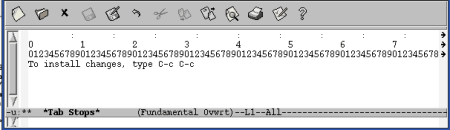
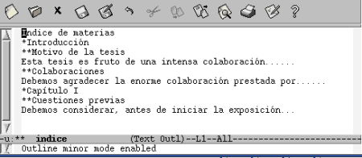

16. Formato de texto con Emacs
Pág.Anterior | Índice | Pág.Siguente
A pesar de que Emacs sea anto todo un editor de texto antes que un procesador, puede llevar a cabo ciertas tareas básicas de formateo de texto:
- Tabulación
- Sangrado
- Centrado de palabras, lineas, párrafos...
- Ocultar y mostrar ciertas porciones del texto
- Edición por columnas
16.1 Tabulación.
Pág.Anterior | Índice | Inicio Página | Pág.Siguente
Cuando se abre un nuevo archivo, en text-mode o en fundamental-mode, a cada pulsación de <Tab> el cursos se desplaza ocho espacios a la derecha.
Ahora, en el archivo abierto, tecleemos una frase cualquiere y pasemos el cursor a la siguiente linea (en blanco).
Si ahora vamos pulsando <Tab> podemos observar que el cursor no se desplaza ya ocho espacios cada vez, sino que se va colocando debajo de cada palabra de la linea anterior.
Si intercalamos una línea en blanco, observamos como , al pulsar <Tab> en la nueva línea el curso se mueve al final de la misma: Emacs ha considerado la linea en blanco intercalada como un único caracter.
Este es un comportamiento bastante adecuado para quién esté escribiendo código, aunque puede que no sea este nuestro caso.
Hay una forma de conseguir que Emacs gestione las tabulaciones como lo haria una antigua máquina de escribir:
C-q <Tab> :El cursor se moverá a intervalos de ocho espacios.
16.1.1 Modificación de los intervalos de tabulación.
Pág.Anterior | Índice | Inicio Página | Pág.Siguente
Ejecutando el comando:
M-x edit-tab-stops <Enter>
Nos aparece el buffer *Tab Stops*. .Los : que podemos ver en la primera línea del buffer nos marcan los actuales intervalos de tabulación.
|  |
Para insertar un nuevo intervalo, llevamos el cursor hasta la posición deseada y teclamos :
Para eliminar una tabulación, nos movemos a ella y la suprimimos
Los cambios se guardarán ejecutando el comando : C-c C-c
Los cambios efectuados afectarán a todos lo buffers creados, pero sólo durante la sesión en curso.
Con el cambio realizado de la forma descrita los intervalos de tabulación cambian para la sesión corriente, pero al reiniciar Emacs se activa de nuevo el intervalo por defecto: ocho espacios.
Podemos cambiar el valor del intervalo de tabulación por defecto através de la modificación de la variable que lo establece, en el archivo .emacs:
(setd-default tab-width 8) :
basta con sustituir 8 por el número de espacios al que queramos establecer el nuevo intervalo de tabulación por defecto.
Con el ya conocido comando C-q <Tab> podremos comprobar el resultado del cambio realizado.
Nos puede interesar que Emacs, en lugar de insertar caracteres de tabulación inserte espacios. Para ello bastará con incluir ( o modificar) la siguiente variable en el archivo .emacs:
(setd-default indent-tabs-mode nil)
Con esta configuración, Emacs insertará espacios cuando se pulse <Tab> . En cambio, si se utiliza el comando C-q <Tab> seguirá insertando caracteres de tabulación.
Disponemos de dos comandos que nos permiten cambiar espacios de tabulación por espacios y viceversa:
M-x untabify <Enter>
Cambia todos los caracteres de tabulación por su equivalente número de espacios. Opera sobre una región de texto.
M-x tabify <Enter>
Cambia grupos de tres o más espacios por caracteres de tabulació, siempre que ello no afecte a la disposición del texto.
16.2 Sangrado del texto
Pág.Anterior | Índice | Inicio Página | Pág.Siguente
Emacs, en text-mode, tiene la capacidad de sangrar texto.
Tras el primer párrafo, usamos <Tab> o espacios para sangrar el texto hasta el nivel deseado.
Cuando el sangrado deba contener más de un párrafo, se inicia el siguiente párrafo pulsando <Enter> y <Tab> o, simplemente tecleando:
- Comando : C-j
- Comando "largo" : M-x new-line-and-indent <Enter>
Pulsando dos veces C-j se intrcalará una linea en blanco entre ambos párrafos.
16.2.1 Sangrado de la primera línea de un párrafo.
Pág.Anterior | Índice | Inicio Página | Pág.Siguente
Para ellos debemos operar en alguno de los siguientes modos:
- paragraph-indent-text-mode : Opera como modo mayor.
- paragraph-indent-minor-mode : Opera como modo menor.
Tenemos un comando, M-q que nos agrupa varios párrafos, especialmente si no están separados por una linea en blanco, en un solo párrafo no sangrado.
Si deseáramos conservar el sangrado de cada párrafo , debemos utilizar el comando:
M-x fill-individual-paragraps <Enter> :
Sobre una región previamente marcada.
16.2.2 Sangrado de una región.
Pág.Anterior | Índice | Inicio Página | Pág.Siguente
Para el sangrado de una determinada región de texto utilizaremos los comandos:
- Comando : C-M-\
- Comando "largo" : M-x indent-region <Enter>
- Sangra una determinada región, a un solo nivel.
- Comando : C-x <Tab>
- Comando "largo" : M-x indent-rigidly <Enter>
- Sangra una determinada región, un espacio. Para un mayor sangrado puede utilizarse el argumento numérico M-nº C-x <Tab> ( nº= numero de espacios de sangrado deseados)
16.3 Cambio de los márgenes
Pág.Anterior | Índice | Inicio Página | Pág.Siguente
Para realizar los cambios de márgenes disponemos de los siguientes comandos:
- Opción de menú : Edit --> Text Properties --> Indentation --> Indent More
- Comando "largo" : M-x increase-left-margin <Enter>
- Aumenta el margen izquierdo.
- Opción de menú : Edit --> Text Properties --> Indentation --> Indent Less
- Comando "largo" : M-x decrease-left-margin <Enter>
- Disminuye el margen izquierdo.
- Opción de menú : Edit --> Text Properties-->Indentation-->Indent Right More
- Comando "largo" : M-x decrease-right-margin <Enter>
- Disminuye el margen derecho.
- Opción de menú : Edit --> Text Properties --> Indentation --> Indent Left More
- Comando "largo" : M-x increase-right-margin <Enter>
- Incrementa el margen derecho.
Los cambios de márgenes afectan solo al buffer corriente y sólo durante la sesión corriente.
Por defecto, los anteriores comandos incrementan o disminuyen los respectivos márgenes en cuatro espacios.
Admiten modificadores numéricos, que provocan que el númer de espacios de variación del margen sea el resulatado de multiplicar el valor por defecto por el valor dado al multiplicador numérico.
Estos comandos pueden actuar sobre regiones, aunque operan mejor sobre buffers completos.
16.4 Justificación del texto
Pág.Anterior | Índice | Inicio Página | Pág.Siguente
El centrado de texto , o su justificación a derecha o izquierda,,tal vez sea una de las tareas de formateo más comunes que llevaremos a cabo con Emacs.
Estando en text-mode vamos a ver como llevar a cabo el centrado ( y /o justificación) de líneas, párrafos y regiones.
Vamos a comenzar por el centrado de texto; para lo cual situaremos el cursor en la línea, parrafo o región seleccionada que deseemos centrar y utilizaremos los siguientes comandos:
- Comando : M-s
- Comando "largo" : M-x center-line <Enter>
- Centra la linea sobre la que se encuentra el cursor..
- Comando : M-S
- Comando "largo" : M-x center-paragraph <Enter>
- Centra el párrafo en el que se encuentra el cursor.
- Comando "largo" : M-x center-region <Enter>
- Centra la región selaccionada.
Existe otra via para el centrado y la justificación de texto, através de las opciones del menú.
Las opciones de menú para la realización de dichas operaciones de encuentran en:
Edit-->Text Properties-->Justification donde nos encontraremos con las siguientes opciones:
Estos comandos actuan sobre una linea individual (aquella sobre la que está situada el cursor) o sobre textos seleccionados previamente.
Los comandos correspondientes a las diversas opciones que aparecen en el menú son:
- M-x set-justification-left <Enter> : Justifica a la izquierda.
- M-x set-justification-right <Enter> : Justifica a la derecha.
- M-x set-justification-full <Enter> : Justifica a izquierda y derecha.
- M-x set-justification-center <Enter> : Centra el texto
En ocasiones, la aplicación de los anteriores comandos sobre párrafos y/om regiones, no da el resultado deseado.
Entonces podemos recurrir un comando ya visto anteriormente: C-x <Tab>; con modificador numérico.
16.5 Outline-mode: ocultar y mostrar texto
Pág.Anterior | Índice | Inicio Página | Pág.Siguente
Podemos acceder al modo outline-mode como modo mayor o como modo menor.
- M-x outline-mode <Enter> : Modo mayor.
- M-x outline-mininor-mode <Enter> : Modo menor.
La utilización de outline-minor-mode reside en que puede utilizarse este modo en el seno del modo mayor en el que deseemos trabajar.
Al entrar en outline-mode, la barra de menú cambia, apareciendo tres nuevas opciones: Headings, Show y Hide
La mayoria de los comandos de outline-mode comienzan por C-c
Cuando trabajemos con outline-minor-mode los comandos comenzarán por C-c @, con el fin de evitar interferencias con otros comandos del modo mayor en el que estemos trabajando.
En outline-mode utilizaremos las siguientes marcas para identificar los distintos niveles(cabeceras, sub-cabeceras...):
| * | Primer nivel |
| ** | Segundo nivel |
| *** | Tercer nivel |
| .... | ......... |
Las líneas que no contienen * se denominan body-lines, body-text o, sencillamente, texto
Emacs espera encontrar los arteriscos en la primera columna de cada línea marcada.
|  |
Através de las opciones de menú Hide y Show podemos ocultar y/o mostrar, respectivamente, porciones determinadas del texto.
Através de las opciones del menú Headings nos podremos mover entre la estructura del documento.
Veamos, esquemáticamente los mencionados comandos del outline-mode
- Opción de menú : Headings --> Up
- Comando : C-c @ C-u
- Comando "largo" : M-x outline-up-heading <Enter>
- Mueve a la cima de la estructura
- Opción de menú : Headings -->Next
- Comando : C-c @ C-n
- Comando "largo" : M-x outline-next-visible-heading <Enter>
- Mueve a la siguiente cabecera o subcabecera visible.
- Opción de menú : Headings -->Previous
- Comando : C-c @ C-p
- Comando "largo" : M-x outline-previous-visible-heading <Enter>
- Mueve a la anterior cabecera o subcabecera visible.
- Opción de menú : Headings -->Next Same Level
- Comando : C-c @ C-f
- Comando "largo" : M-x outline-forward-same-level <Enter>
- Mueve al siguiente elemento del mismo nivel.
- Opción de menú : Headings -->Previous Same Level
- Comando : C-c @ C-b
- Comando "largo" : M-x outline-forward-same-level <Enter>
- Mueve al elemento anterior del mismo nivel.
- Opción de menú : Hide-->Leaves
- Comando : C-c @ C-l
- Comando "largo" : M-x hide-leaves <Enter>
- Ocula el texto de una cabecera particular y el de todas sus sub-cabeceras.
- Opción de menú : Hide-->Body
- Comando : C-c @ C-t
- Comando "largo" : M-x hide-body <Enter>
- Oculta todos los textos
- Opción de menú : Hide-->Entry
- Comando : C-c @ C-c
- Comando "largo" : M-x hide-entry <Enter>
- Oculta el texto de una cabecera en particular. No el de sus sub-cabeceras.
- Opción de menú : Hide-->Subtree
- Comando : C-c @ C-d
- Comando "largo" : M-x hide-subtree <Enter>
- Oculta sub-cabeceras y texto asociados a una determinada cabecera.
- Opción de menú : Hide-->Sublevels
- Comando : C-c @ C-q
- Comando "largo" : M-x hide-sublevels <Enter>
- Muestra solo los primeros niveles.
- Opción de menú : Hide-->Other
- Comando : C-c @ C-o
- Comando "largo" : M-x hide-other <Enter>
- Oculta textos y cabeceras fuera del actual sub-nivel.
- Opción de menú : Show -->All
- Comando : C-c @ C-a
- Comando "largo" : M-x show-all <Enter>
- Muestra todo.
- Opción de menú : Show -->Entry
- Comando : C-c @ C-e
- Comando "largo" : M-x show-entry <Enter>
- Muestra el texto asociado con una cabecera determinada.
- Opción de menú : Show -->Branches
- Comando : C-c @ C-k
- Comando "largo" : M-x show-branches <Enter>
- Muestra los textos de una cabecera y de todas sus sub-cabeceras.
- Opción de menú : Show -->Children
- Comando : C-c @ C-<Tab>
- Comando "largo" : M-x show-children <Enter>
- Muestra el siguiente nivel de sub-cabeceras asociado con una determinada cabecera. No muestra el texto.
- Opción de menú : Show -->Subtree
- Comando : C-c @ C-s
- Comando "largo" : M-x show-subtree <Enter>
- Muestra cabeceras (y texto) asociadas a una determinada cabecera.
- Comando : C-c @ C-^
- Comando "largo" : M-x outline-promote <Enter>
- Sube un nivel la cabecera actual.
- Comando "largo" : M-x outline-demote <Enter>
- Baja un nivel la cabecera actual.
16.6 Las Tablas en Emacs: Rectángulos
Pág.Anterior | Índice | Inicio Página | Pág.Siguente
Emacs ofrece una alternativa a la edición de tablas: los rectángulos. Son áreas rectangulares que se definen y manipulan utilizando comandos específicos.
Los comandos para la manipulación de rectángulos operan mejor en archivos sin carácteres de tabulación por lo que, antes de comenzar a utilizarlos es conveniente seleccionar el buffer ( C-x h) y proceder a la sustitución de los caracteres de tabulación por espacios, mediante el comando:
- M-x untabify <Enter>
Para definir un rectángulo se opera de la misma manera que para definir una región de texto.Debemos tener en cuanta que el caracter sobre el que se halla el cursor, cuando está en el extremo inferior derecho, no forma parte de la selección.
Los comandos utilizados en la manipulación de rectángulos son:
- Comando : C-x r k
- Comando "largo" : M-x kill-rectangle <Enter>
- Elimina un ractángulo y lo guarda.
- Comando : C-x r d
- Comando "largo" : M-x delete-rectangle <Enter>
- Borra un ractángulo y no lo guarda.
- Comando : C-x r y
- Comando "largo" : M-x yank-rectangle <Enter>
- Inserta el último rectángulo eliminado..
- Comando : C-x r c
- Comando "largo" : M-x clear-rectangle <Enter>
- Utilizar los espacios en blanco fuera del área marcada como rectángulo.
- Comando : C-x r o
- Comando "largo" : M-x open-rectangle <Enter>
- Inserta un rectángulo en blanco en el área marcada.
- Comando : C-x r r Ñ
- Comando "largo" : M-x copy-rectangle-to-register <Enter>
- Copia el rectángulo al registro Ñ ( Ñ=cualquier caracter).
- Comando : C-x r i Ñ
- Comando "largo" : M-x insert-register <Enter>
- Inserta rectánfulo desde el registro Ñ ( Ñ=cualquier caracter).
- Comando : C-x r t cadena <Enter>
- Comando "largo" : M-x string-rectangle <Enter>
- Cambia el contenido del rectángulo marcado por el de la cadena.
- Comando "largo" : M-x delete-whitespace-rectangle <Enter>
- Si el rectángulo contiene un espacio inicial en blanco, lo elimina.